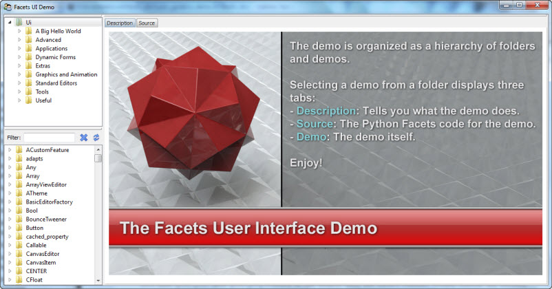
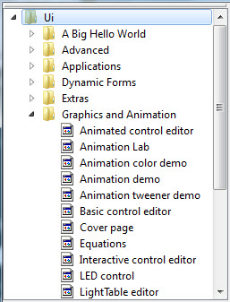
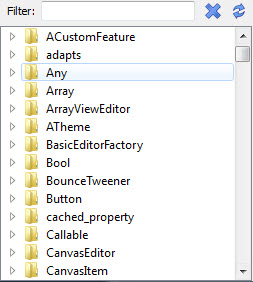
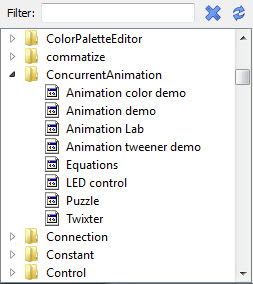
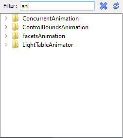
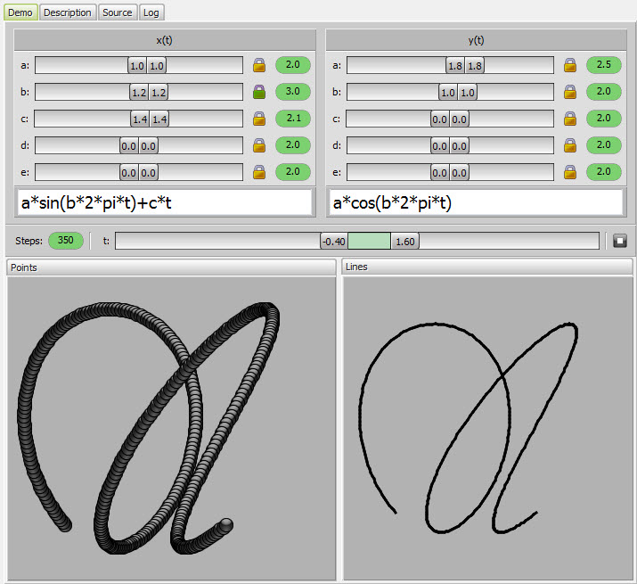
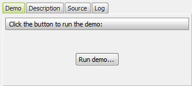
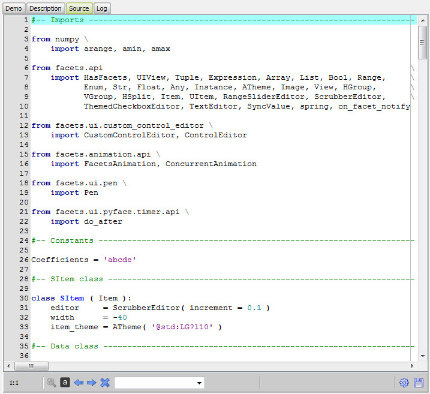
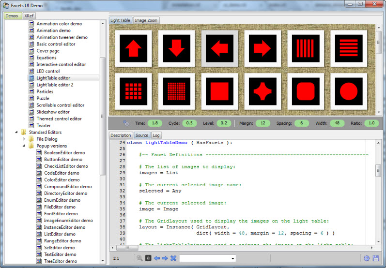

Facets includes an extensive set of user interface (UI) demonstration programs that are provided both to inspire you and to provide you with useful starting points for your own coding flights of fancy.
Each demonstration can either be invoked individually from the command shell or, more commonly, run under control of the Facets UI demo program, which can be started using the command:
python -m facets.extra.demo.ui.demo
When you first start the UI demo program, you should see a window like the following:
The top-left hand corner of the demo window contains a hierchical view of all available demos:
The view is organized as a nested series of folders. Select any item in a folder to launch the corresponding demo.
The bottom left hand corner of the demo window contains a list of all Facets package symbols referenced by any of the demos:
Each symbol entry can be opened to display the list of demo files that reference the symbol:
Selecting one of the referencing demo files will launch the selected demo. This can be a useful feature if you are looking for an example of how to use a particular Facets item, such as a Facets type or UI editor.
To help speed your search, you can enter a full or partial symbol name into the Filter field at the top. The list automatically updates to show all matching symbols as you type:
The search is case insensitive and matches any part of the symbol name. You can clear the current filter by clicking the X icon just to the right of the filter text field.
Once a demo has been selected from the folders or symbols view, the demo is started, creating four new tabs in the main part of the UI demo on the right side of the window:
The Demo tab is where the demo program’s Facets UI appears:
In some cases, where a large or popup user interface is being demonstrated, you will see a button instead:
In this case, click the button to display the demo’s popup view.
The Description tab contains descriptive information which usually covers one or both of the following topics:
If it is not clear how a particular demo is supposed to work, try clicking the description tab to see if any help on using the demo is available.
The Source tab displays the source code for the demo:
The source tab contains a full blown text editor which allows you to try out (and optionally save) changes to the demo. This can be useful for quickly experimenting with variations of the original code to see what if?.
To try out a change, modify the source code then click the gear icon located in the lower right hand corner of the source tab view. If no syntax errors are found, the new version of the demo replaces the original version shown on the demo tab.
If the code contains a syntax error, information about the error apears in the status message area just to the left of the gear icon, and the line where the error was encountered is highlighted in the source code editor. Correct the error, then click the gear icon to try again.
Note that it is not necessary to save any changes prior to clicking the gear icon, but if you do make changes you want to keep, click the diskette icon to the right of the gear icon. A standard file dialog prompting for the name of the file to save to will appear. Fill this out and click the OK button. Each time you run a demo, make changes, then save, you will be prompted for a new file name to prevent you from accidentally overwriting the original demo source code.
The log tab displays the results of any print statements executed by the demo program. Since most demos do not contain print statements, this tab is usually empty.
Each of the views and tabs contained in the UI demo window can be dragged about and reorganized as desired:
If a tab is visble, drag the tab to its new location. If no tab is visible, drag the narrow horizontal bar above the view to the desired location. The results of your reorganization are automatically saved across UI demo program sessions.